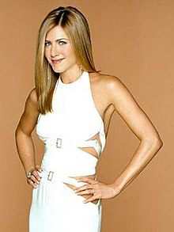

Rachel Green aka Jennifer Aniston
Rachel Green aka Jennifer Aniston

Rachel Karen Green is a fictional character, one of the six main characters who appeared in the American sitcom Friends. Portrayed by Jennifer Aniston, the character was created by David Crane and Marta Kauffman, and appeared in all of the show's 236 episodes during its decade-long run, from its premiere on September 22, 1994 to its finale on May 6, 2004. Introduced in the show's pilot as a naïve runaway bride who reunites with her childhood best friend Monica Geller and relocates to New York City, Rachel gradually evolves from a spoiled, inexperienced "daddy's girl" into a successful businesswoman. During the show's second season, the character becomes romantically involved with her friend, Monica's older brother Ross, with whom she maintains a complicated on-off relationship throughout the series. Together, the characters have a daughter, Emma.
The role of Rachel was originally offered to Téa Leoni, the producer's first choice, and Courteney Cox, both of whom declined, Leoni in favor of starring in the sitcom The Naked Truth, and Cox in favor of playing Rachel's best friend Monica in Friends.[5] A virtually unknown actress at the time, who had previously starred in five short-lived sitcoms, Aniston auditioned for the role of Rachel after turning down an offer as a cast member on the sketch comedy show Saturday Night Live. After acquiring the role and before Friends aired, Aniston was temporarily at risk of being recast because she had also been involved with another sitcom, Muddling Through, at the time, which was ultimately cancelled and allowed Aniston to remain on Friends.